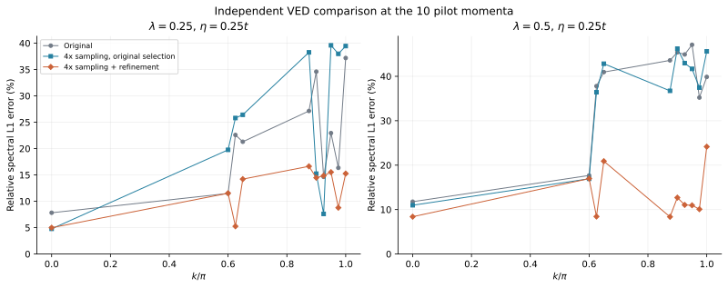
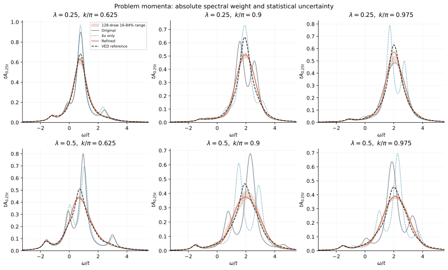
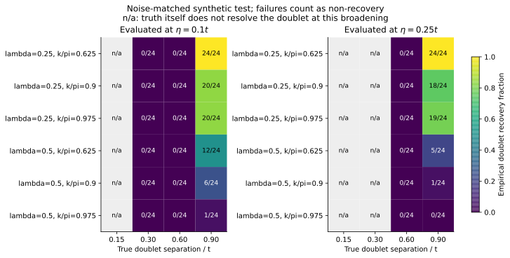
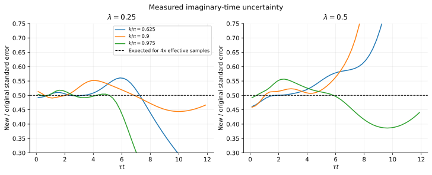
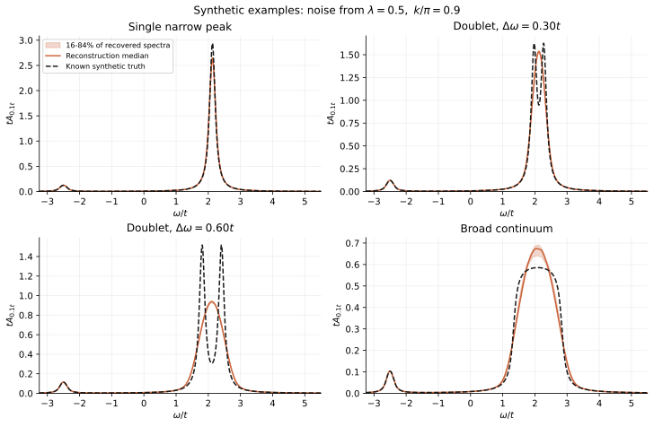

1D Holstein 谱函数图
横轴为动量路径，纵轴为能量，颜色表示谱函数的绝对强度。零温、单电子、无限晶格；更新：2026-09-19。
与 VED 相同的41点 DiagMC 加密计算已在 Kestrel 完成，采样、谱延拓与逐点检查均已结束。
复用与新网格完全重合的9点，补算其余32点；两种耦合共新增256条独立链，每链仍为2400万生产步。 最终41点使用328条链、78.72亿生产步，其中本轮新增61.44亿步；72条旧链的原始文件已逐一核对哈希。
Kestrel 采样作业 18674189、后处理作业 18674190 均为 COMPLETED，退出码为0:0。 完成作业记录 · 实际动量网格与复用记录 · 全部41点的检查结果。
下方已替换为实际的41点重建。增加动量点改善动量采样密度，不能据此提高频率方向的精度声明。 精细谱仍未通过稳定性验证。较粗展宽下的整体谱形更稳定；窄峰和声子侧带的精细结构仍需检验。
误差改进试验：10个动量点
4倍采样与延拓改进已在 Kestrel 完成。每种耦合选择以下动量，覆盖问题区域及邻点，并以零动量作对照：
每点8条新链、每链4800万生产步；两种耦合共新增160条链、76.8亿步。采样内核保持与41点基线相同。
两种耦合下，传播子统计误差的典型值均降至原来的约51%。分块长度从4增到16后，逐点中位标准误差之比在0.95–1.03之间，未见系统性增长。 14种重建设置在相同的留出数据和评分标准下比较，覆盖时间范围、时间与频率网格、协方差截断、谱支持、分块和最大熵方法。 多个问题点受益于纳入原先未使用的 数据。
| λ | 原始中位数 | 仅4倍采样中位数 | 改进后中位数 | 原始最大值 | 改进后最大值 |
|---|---|---|---|---|---|
| 0.25 | 21.9% | 26.1% | 14.3% | 37.2% | 16.6% |
| 0.5 | 40.4% | 39.6% | 11.0% | 47.1% | 24.2% |
20组耦合／动量中有18组误差下降，另两组小幅上升。表中的“仅4倍采样”继续使用原来的延拓与最小平均留出分数选择规则； “改进后”使用冻结的重建设置和偏向较强正则化的一标准误差选择规则。这个规则是模型选择启发式，不是显著性检验。 VED 仅在方案冻结并记录哈希后用于比较，不参与拟合、选择或替换结果。此表覆盖10点试验，不能与下方41点基线的最大误差直接混用。

{kind=link}
{kind=link}

{kind=link}
{kind=link}
不确定性和分辨率
每组完成128次分块 bootstrap，共2560次；每次在固定谱表示内重新选择正则化参数。 初次有3次最大熵求解未收敛，已对相同样本、相同所选参数作数值重试，主谱保持冻结； 原失败与重试记录均保留。 图中阴影为16–84%经验分位范围，下载数据另含2.5–97.5%范围及可接受谱表示之间的差异。 这些范围不包含所有谱模型偏差。另有36种模拟谱情况、每种24次独立噪声，共864次恢复测试，全部完成。

{kind=link}
{kind=link}
精细窄峰仍未通过普遍的定量验证。例如在 、 的模拟测试中， 两种耦合均未能恢复间距 的双峰（各0/24）；宽连续谱也可能产生伪峰。 图中的“n/a”表示已知真谱在该显示展宽下本身就不满足双峰判据。 恢复率只适用于这些模拟谱和测得的噪声协方差，24次样本不足以构成通用分辨率保证。
传播子误差下降及模拟谱实例

{kind=link}
{kind=link}

{kind=link}
{kind=link}
逐点误差与模拟恢复率 · 分块、链间及协方差诊断 · 完成作业记录 · 可审阅源码与复现方法 · 完整试验记录。
试验 NPZ：λ=0.25 · λ=0.5。
各阶段谱的数组形状为 (3,10,701)，轴为 (eta,k,energy)；保留真实动量索引，不填补其余动量。
完整复现包：源码、诊断、模拟谱及报告 · 全部 bootstrap 样本 · λ=0.25 原始链 · λ=0.5 原始链 · 大小与 SHA-256 · 数据包独立复核。
模型选择的背景可参阅 Schumm 等的解析延拓交叉验证研究。 本轮新增方法是最大熵对照；下方保留完整41点基线，便于比较。
41点基线 DiagMC 谱图：η=0.25t
保持默认参数 、，路径为 。 41个动量点分别采样和延拓，不沿动量方向插值。横轴为 ，纵轴为相对真空的 ， 左右色标统一为 。

{kind=link}
中、高动量处的一些峰在相邻动量列之间不稳定，不能据此确认新的物理激发。 图已生成并不代表这些窄峰已达到定量精度；本轮保留这些原始重建差异。
同数据的对数色标 SVG · PDF。
{kind=link}
较粗分辨率：η=t

{kind=link}
这里只增加显示展宽，没有重新拟合或更换原始数据。较平滑的整体谱形不能用于判断单个声子侧带的峰宽。
已完成的精度检查
全部41个动量 与 VED 逐点比较，保持完全相同的动量数组、能量网格、图窗和展宽， 不插值参考谱。下表为全部41点上整条谱的相对积分误差范围：
| λ | η=0.25t | η=t | 最大留出预测分数 |
|---|---|---|---|
| 0.25 | 4.4%–39.9% | 0.4%–3.5% | 107.7 |
| 0.5 | 7.2%–53.7% | 0.9%–5.9% | 47.9 |
该误差包含基态峰，不能与结果页中去掉基态峰后的“非相干谱误差”混用。 部分动量的留出预测分数仍偏高，提示统计量或协方差评估仍需改进。 λ=0.25 与0.5分别有8点与10点的所选正则化参数位于扫描边界。 41点的比较没有证明动量离散化已完全收敛，也不构成逐频率误差上界。
原始块数、源代码和输入哈希均已检查；328条链均完成，随机种子互不重复，阶数上限拒绝次数为0。
未展宽的 最大绝对残差为 9.35e-10。
NPZ 保存8次块 bootstrap 的16–84%经验范围；它不包含全部谱参数化偏差。
完整检查 JSON · 谱延拓来源记录 · Kestrel 运行环境 · 本轮源码、传播子块数据、日志与谱图。
原始逐链文件按耦合和动量索引分包，完整审计时与主数据包解压到同一目录：
数据包大小与 SHA-256。 VED/Lanczos 参考另见下方的参考数据包；复现完整审计时也需要解压该包。
- DiagMC，λ=0.25：NPZ 与 bootstrap 范围 · 主图 CSV（gzip）
- DiagMC，λ=0.5：NPZ 与 bootstrap 范围 · 主图 CSV（gzip）
DiagMC NPZ 的 A 形状为 (3, 41, 701)，
轴为 (eta, k, energy)，展宽数组为 [0.25, 0.5, 1.0]。
早先的17点结果和 Anvil 提交记录
17点主数据包 · λ=0.25 原始链 · λ=0.5 原始链 · 17点检查。 此前的 Anvil 41点提交记录及 提交源码保留为历史记录；本次完成结果来自 Kestrel。
独立 VED 参考：相同展宽下比较
每种耦合独立计算41个均匀动量点，能量范围为 。 所有动量使用同一个真空能量零点，左右两图共用色标；没有对每个动量单独归一化，也没有平移动量列的能量。 色块直接对应计算的动量点，未沿动量方向平滑插值。

{kind=link}
谱函数和展宽的定义
图中颜色为无量纲的 。 是洛伦兹线形的半高半宽，本图对应全宽 。 它控制显示分辨率，不等于极化子的物理衰减率。 有限绘图窗口没有收集全部谱重和洛伦兹尾，因此没有把图窗内的每列积分强行调成1。
对数色标：查看较弱的谱重

{kind=link}
参考图的数值检查
变分空间按 Bonča 等提出的无限晶格基底构造。有限空间把连续谱表示为离散极点，再按同一展宽求和； 见 Bonča、Trugman 与 Batistić（1999）。 主图使用16代；14与16代在全部41个动量点比较，16与18代在 五点比较。
| λ | 14→16代，41点 | 16→18代，5点 | 400→800步，检查点 |
|---|---|---|---|
| 0.25 | 0.102% | 0.025% | 1.75e-12 |
| 0.5 | 0.096% | 0.037% | 3.25e-11 |
Lanczos 不保存全部向量作重正交化；在上述五个动量点、各个变分空间，以800步检查400步结果。 这些差异支持当前展宽下的参考图稳定性，但不是对无限基底精确解的严格误差上界，也不保证更窄展宽的细结构。
所有计算均检验了展宽前的三个谱矩；最大绝对残差为 1.20e-14。 洛伦兹展宽后的高阶矩不用于这项检验。
采样与后处理已完成
Kestrel 采样作业18674189和后处理作业18674190已在 short-stdby 分区完成，均正常退出。每个耦合、每个动量4条独立链，每链2400万生产步；9个重合点复用旧数据，其余32点在本轮独立采样。预检中的 C++ 内核检查、12项 Python 测试及自由粒子、原子极限、一阶截断解析对照均通过。各作业的节点、时间和资源记录见上方完成作业记录。
全路径延拓使用精确时间箱积分核、协方差、未展宽谱矩和独立链交叉验证， 不强行指定每个动量的孤立基态极点，也不将 VED 谱作为输入。谱仍标为初步结果。
参考数据和复现
- λ=0.25：完整 NPZ · 主图 CSV（gzip）
- λ=0.5：完整 NPZ · 主图 CSV（gzip）
NPZ 内的 A 轴顺序为 (eta, k, energy)，
展宽数组为 [0.15, 0.25, 0.5, 1.0]，每张主图的数据形状为 (41, 701)。
CSV 每行依次是 k, k/π, ω/t, tA；只导出主图的 。